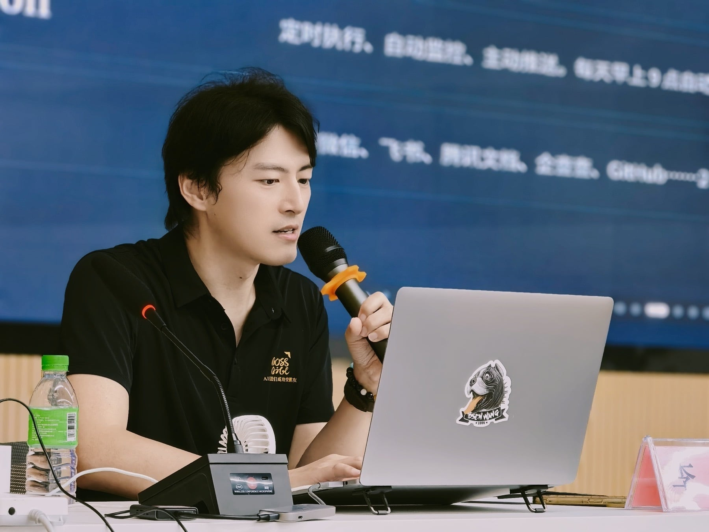
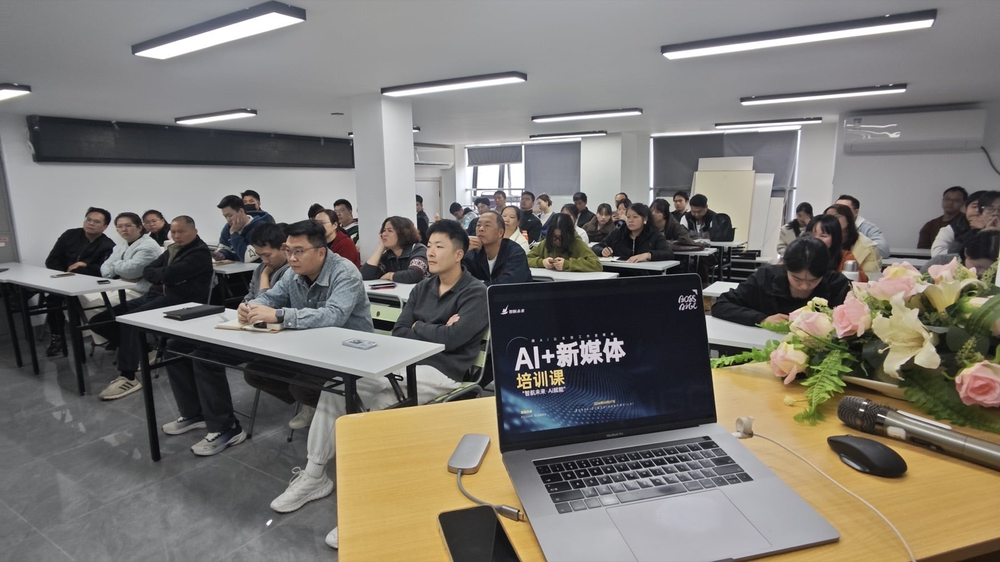
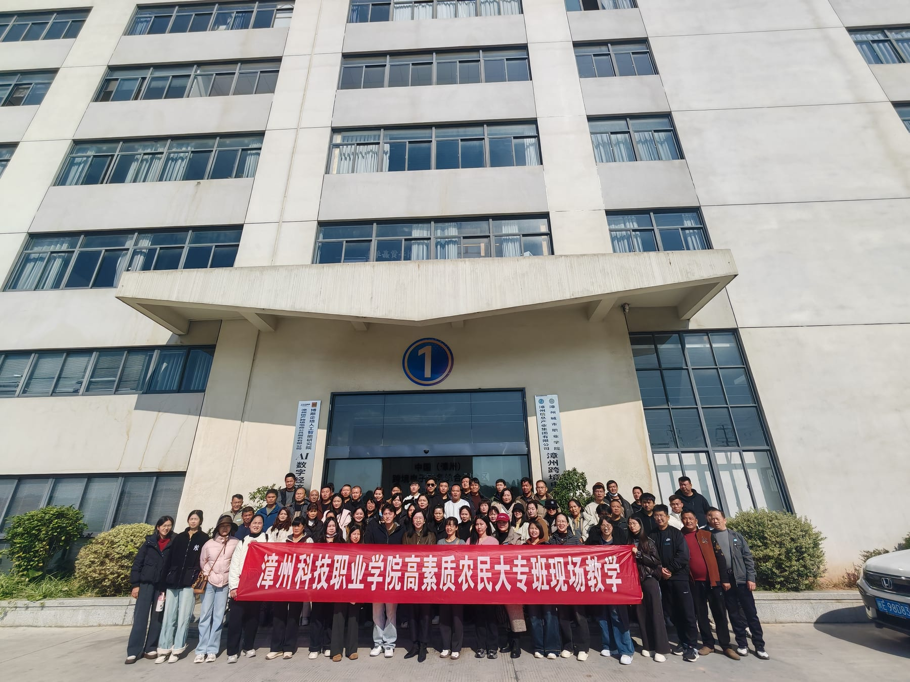
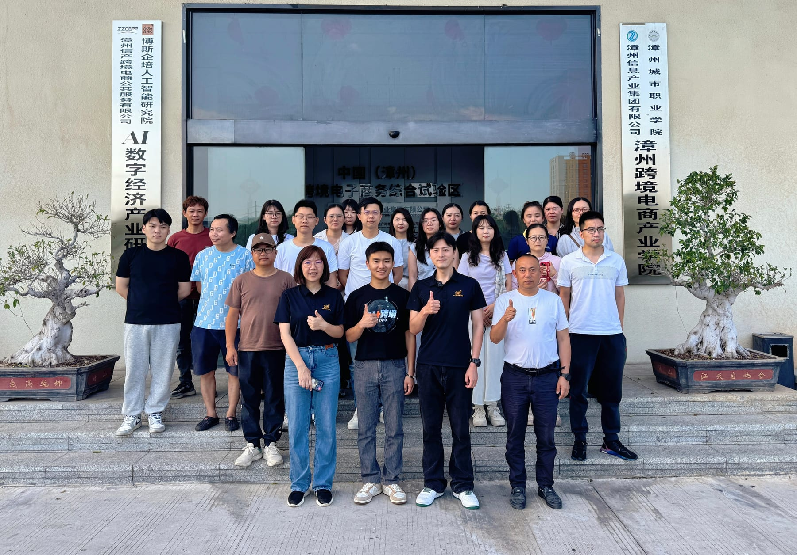
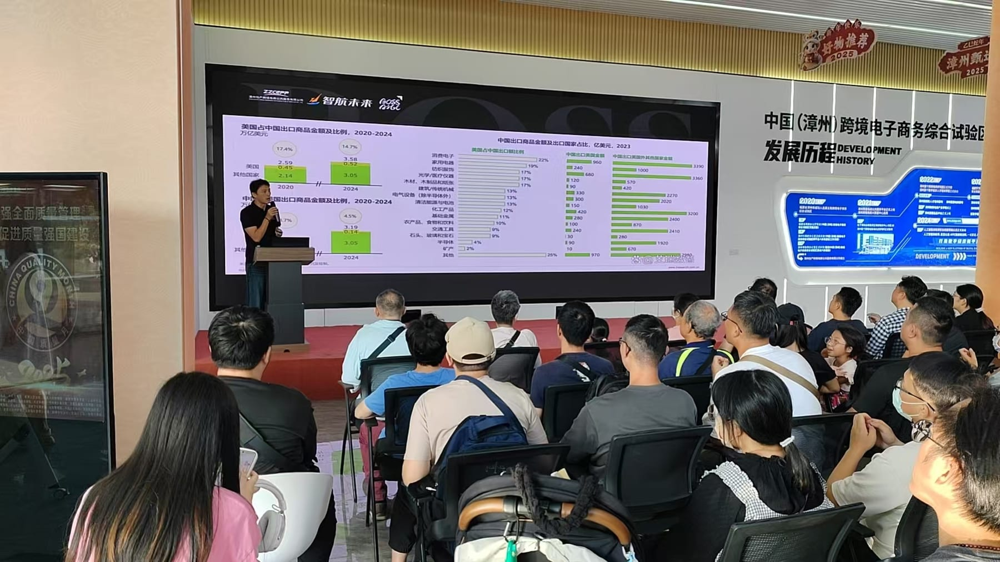
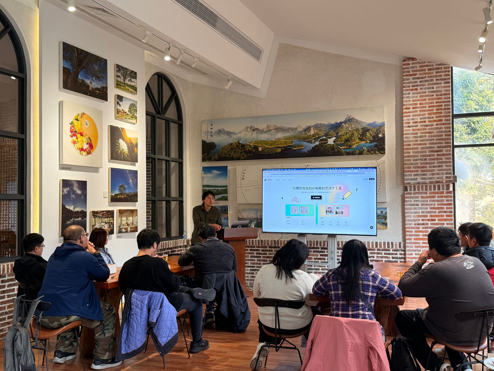

认知建立
理解AI能力边界、应用场景与人机协作方式。
从一堂课到一套课程，从掌握工具到完成项目。面向个人、讲师、院校与企业，提供AI实战培训、课程开发、人才孵化与定制服务。
学AI → 做作品 → 做项目 → 就业创业 / 成为讲师
以真实问题和业务成果判断培养效果，让学习连接作品、项目、岗位和职业发展。
理解AI能力边界、应用场景与人机协作方式。
围绕内容、设计、视频、数据与智能体完成训练。
以企业任务为题，形成可展示、可复用的成果。
进入就业提升、项目实践、讲师孵化或创业陪跑。
连接真实项目、岗位场景与AI+OPC实践生态。
课程不局限于固定天数。根据学员基础、行业场景与组织目标灵活组合模块，支持公开课、专题训练营、企业内训、项目制课程及定制化开发。


课程与交流足迹覆盖闽南师范大学、集美大学及诚毅学院、漳州职业技术学院、漳州城市职业学院、漳州科技职业学院、漳州华夏职业技术学校等院校，并持续服务园区、协会与企业。



课程不是固定模板。我们根据对象、基础、课时和成果目标，重新组合内容与实训方式。
从零建立AI认知与实操能力，完成内容、视觉、视频、办公或智能体作品。
适合：职场人、创业者、自由职业者从课程定位、课件开发、案例设计到试讲磨课，培养能讲、能教、能带实训的讲师。
适合：行业专家、培训师、转型讲师面向毕业生与在校生，训练AI岗位技能、作品集、项目实践与创新创业能力。
适合：院校、就业部门、学生团队提供需求调研、课程共建、师资培训、实训营、项目工作坊与成果验收。
适合：院校、企业、园区、协会提供人工智能训练师相关知识技能培训、实操强化与考前辅导服务。
证书报考与认定以当期政策及授权机构要求为准依托博斯企培、智航未来与AI+OPC促进发展中心实践生态，连接项目、资源与陪跑服务。
从学会AI，走向用AI创造价值
调研场景 · 设计课程 · 开发课件 · 组织实训 · 验收成果
课程内容与业务场景直接连接，形成可展示、可复用、可继续迭代的成果。
支持个人报名、讲师孵化、院校联合培养、企业内训、课程共建与行业定制服务。